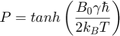
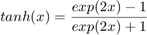
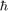
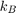
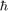
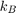

Calculating Polarisation at Thermal Equilibrium
Contents
Polarisation at thermal equilibrium can be described by:

where P is the polarisation, tanh is the hyperbolic tangent describing:

is the magnetic field strength,  is the gyromagnetic ratio of the detected nucleus,  is the reduced Planck constant and  is the Boltzmann constant
is the gyromagnetic ratio of the detected nucleus,  is the reduced Planck constant and  is the Boltzmann constant
Inputs
B0: is the magnetic field strength in Tesla
gyro: is the gyromagnetic ratio in radians per second per Tesla
T: is the temperature in degrees Celsius
Output
thermalpol: is the polarisation of a given nuclei type inside a the magnetic field, B0 at thermal equilibrium
function thermalpol = findThermalEqPol(B0,gyro,T) kB = 1.38064852*(10^(-23)); redPlanck = 1.054571817*(10^(-34)); T = T+273.21; thermalpol = tanh((gyro*B0*redPlanck)/(2*kB*T)); end
thermalpol = 6.1135e-06
Notes
The inputs used in the example were:
B0: 7
gyro: 67280000
T: 21
The example was run by putting:
thermalpol = findThermalEqPol(7,67280000,21)
into the command window